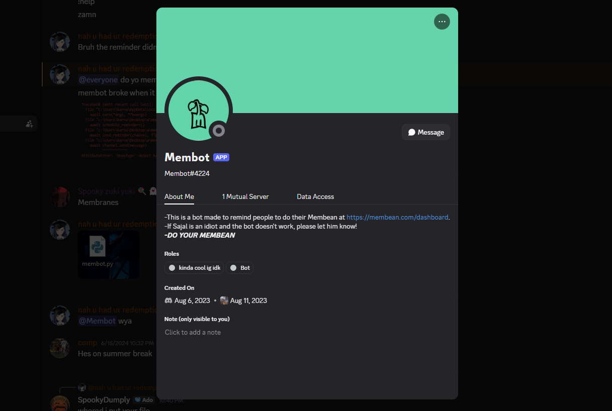

The in-person projects were done in my Robotics class. Although we had an engineering notebook and took photos, a lot of it was lost due to something with iCloud. The videos and photos shown are the ones I dug up from a Discord group we made, so I just decided to include those projects even though we did more. Some of the photos seen were taken this week because I learned this could be a great supplement for colleges.
Story
A quick story about the class. A group of students and I were enrolled into the class against our will, but it allowed me to do all these projects so I call it a blessing. Because our enrollment was unplanned, there wasn't any planned resources to be allocated to us because there was around 30 total students in the class. So, throughout the year, the teacher allowed us to go on my own direction. Initially, we had no idea what to do. We first decided to use some of the scrap pieces to make a can crusher. It took us a week, and we did it. Oh yeah, unfortunately from now on, when I say "we" I am referring to me. The other people decided to spend Robotics as a Study Hall, which is fair. We made a robotic extension arm with an older motor, but we had to break it down because it always overheated. Another thing we did was use a car we got from Goodwill and try to turn it into a dog. Then, we got a donation from the elementary school and we got a ton of Arduino kits, we got mikroworkstation kits, and a whole lot of stuff. Anyways, I was the only one working on the mikrostation. I spent 3 months learning how to solder and how to actually work the program. What I wanted to do is run the video game Doom on the mikromedia screen. Unfortunately, all that time went to waste because I couldn't do anything without license key, which I could never obtain. I then shifted to the Arduino Projects from the remainder of the year until I decided to use the Robotics period as an AP Study Hall. Anyways, why am I saying all of this? Well, I had already loved biology way before, but I did not want to be a doctor. My experiences in this class shwoed me that I like to create things and be more hands-on. This is why I want to major in Biomedical Engineering I hope this was not a bore to read!
Beginner Arduino Projects
I also try to describe the projects while my friends talk about Calculus and other stuff in the back.
My First Servo Project
Date On Discord: 4/22/25
Although it isn't my first, it's my first one that wasn't just the "Press a Button to Light an LED," which I took the code online. This project, I tried to learn the code and through much trial and error, I finally got it to work. It showed me the ways of the Arduino, how to use a breadboard, and how to optimize wiring especially since I made so many mistakes.
Ultrasound Presence Detector
Date On Discord: 4/29/25
This project was fun to make because I learned to use the other components in the Arduino kit. This one took me a really long time to figure out and I spent so many classes figuring out how the code would actually work. I didn't really know what ports of the Arduino did what and I tried to my best to figure it out.
Wired Car
This is the car we got from Goodwill. When we got it, we discovered there was no remote controller, so I decided to make my own. I used some old wires my teachers didn't need to create this. I used old switches and I made a wire diagram to make each switch button have a function. This project taught me to solder for the first time and strip wires. I even wanted to turn it into a dog I could walk, but I ran out. Some of the photos seen were taken this week, so that's why a lot of the wired are frayed or disconnected. A lot of progress photos are also missing.
Coding Project I Wanted To Include: Membot

I've always wanted to make a Discord bot, and this project was it. This was a personal project I made for me and my classmates. In our English classes, we had to do vocabulary training twice a week on a website called Membean and a lot of my classmates forgot to do it. So, I created Membot, a bot to remind my classmates to do their Membean at 1pm on Friday, Saturday, and Sunday. I did it all myself on VS Code and in addition to reminding my classmates, I made fun games on it like hangman, triva, or rock-paper-scissors.
My Instagram Fan Account
This is obviously a very different direction compared to my other things, however this one is just as important to me. This account is based off An Shiraishi, a character from the rhythm game Hatsune Miku: Colorful Stage. I made the account because she is my favorite character and I wanted to make videos about her. Each reel posted takes me anywhere from 2 to 8 hours to edit because I use free software. My ideas are usually from online trends, but their occasionlly they are my own. This account is my creative outlet and I find making and editing these silly videos to be fulfilling and fun. I also spend a lot of time engaging with other content creators over our shared love of the game and Vocaloid songs in general. All in all, this is a bit into my creative side, but it also shows that I can edit videos perfectly fine.